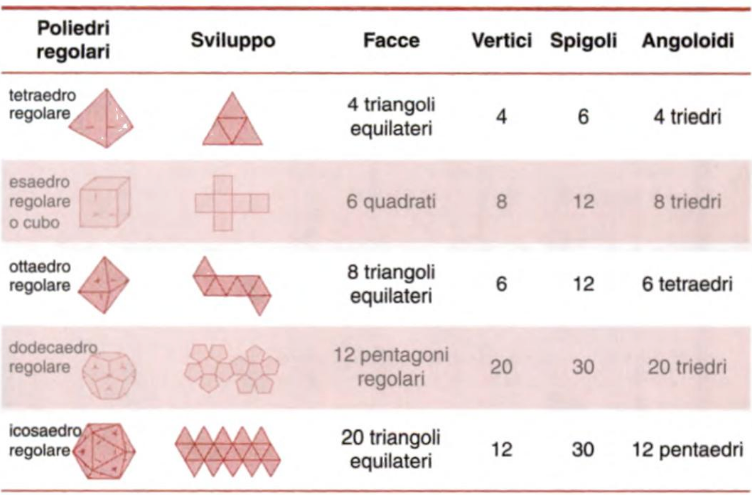

Poliedri
Si chiama poliedro (gr. con molte facce) ogni figura solida limitata da un numero finito di poligono, situati su piani diversi e tali che ognuno dei lati sia comune a due di essi e il piano di ciascuno lasci gli altri da una stessa parte.
I poligono che limitano un poliedro sono detti facce; I lati delle facce sono detti spigoli del poliedro; ogni spigolo appartiene contemporaneamente a due facce distinte. Un poliedro può possedere spigoli di lunghezza uguale (come nel cubo) o diversa.
I vertici delle facce (cioè le estremità degli spigoli) sono vertici del poliedro. Ogni vertice appartiene almeno a tre facce distinte. A ogni vertice è associato un Angoloide: angolo solido, ossia parte di spazio delimitato da tre o più facce conun vertice comune. L’angoloide è l’analogo tridimensionale degliangoli piani.
In generale, il numero n a cui appartiene è anche uguale al numero di spigoli che escono da esso: questo numero è detto la valenza del vertice.
Detti F, S, V, rispettivamente, il numero delle facce, degli spigoli e dei vertici di un poliedro semplice, tra essi sussiste la relazione di Eulero:
F + V = S + 2
Nel caso di un cuvo V = 8, S = 12, e F = 6, perciò V − S + F = 8 − 12 + 6 = 2, mentre per il fullerene si ha V − S + F = 60 − 90 + 32 = 2.
Poliedri Regolari
Un poliedro si dice regolare se le sue facce sono poligoni regolari congruenti e i suoi angoloidi sono congruenti tra loro.
